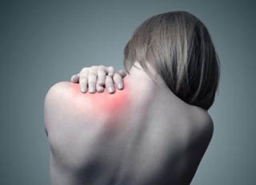
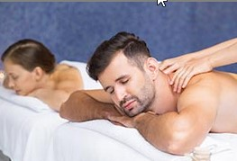
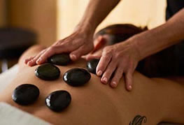
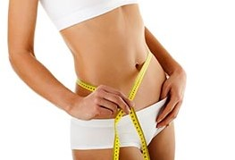
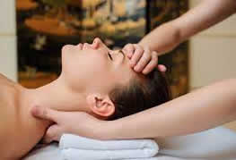
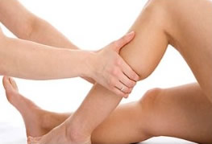

Masajes descontracturantes
Combate el cansancio físico y mental. Da mejor movimiento a las articulaciones. Relaja las tensiones musculares. Produce un efecto sedante sobre el sistema nervioso. Activa la circulación sanguínea y linfática; favoreciendo la nutrición celular y la eliminación de toxinas. Estimula el flujo de la energía vital de los centros energéticos (chakras). Mejora el estado anímico. Aumenta la vitalidad y favorece la sensación de bienestar general.

Masajes relajantes
Este tipo de masaje fija su atención en descargar la tensión acumulada, se aplica de forma lenta y con una presión firme y progresiva. Se actúa sobre los puntos de tensión del receptor, realizando maniobras en las áreas de tensión (los llamados nudos), que principalmente se ubican en la espalda. Esto involucra eliminar las tensiones musculares producto del estrés diario, disminuir el dolor, mejorar la circulación, a disminuir los síntomas de ansiedad, restaura la armonía interna y la energía indispensable para el cuerpo.

Masajes con piedras calientes
Masajes con aceites esenciales, se alternan las manos y se pasan las piedras por todo el cuerpo. Se utilizan piedras de río y de onix. Se colocan sobre los chakras o centros energéticos del cuerpo. El calor transmite energía a los músculos y articulaciones. Combaten el dolor, relajan y ayudan a recuperar el sueño. Ademas de revitalizar, iluminar y oxigenar la piel.

Masaje reductor anti-celulítico con maderoterapia y drenaje
Masajes manuales con el objetivo de reducción de centímetros en diferentes partes del cuerpo con la combinación de técnicas con maderoterapia más drenaje linfático y efecto anticelulítico. La maderoterapia consiste en una serie de masajes para tonificar el cuerpo, minimizar la retención de líquidos, tratar la grasa localizada, y estimular piel. Ofrece resultados y sensaciones únicas. Los instrumentos utilizados para su aplicación son de madera, vienen en diferentes tamaños y formas para ajustarse a todas las zonas del cuerpo.

Masaje cervico craneal
El masaje cérvico-craneal trabaja los puntos donde se manifiesta el estrés y la tensión, produciendo una estimulación de la irrigación sanguínea. Este tipo de masaje está recomendado para estados de agotamiento o preocupación constante, ya que alivia la fatiga mental y el cansancio visual. El masaje craneal cumple con el doble objetivo de eliminar la tensión y las consecuencias que de ella se derivan. Además, tiene un efecto relajante general, aportando una sensación de calma y bienestar.

Masaje linfático drenante circulatorio
El Drenaje Linfático Manual o Masaje Circulatorio son técnicas que consisten en maniobras concretas, suaves y precisas con el objetivo de activar el sistema linfático y el circulatorio. Estas técnicas mejoran la función tanto de reabsorción del líquido intersticial como la conducción mediante sus vasos para su purificación y eliminación de las toxinas de la metabolización celular, entre otras.
